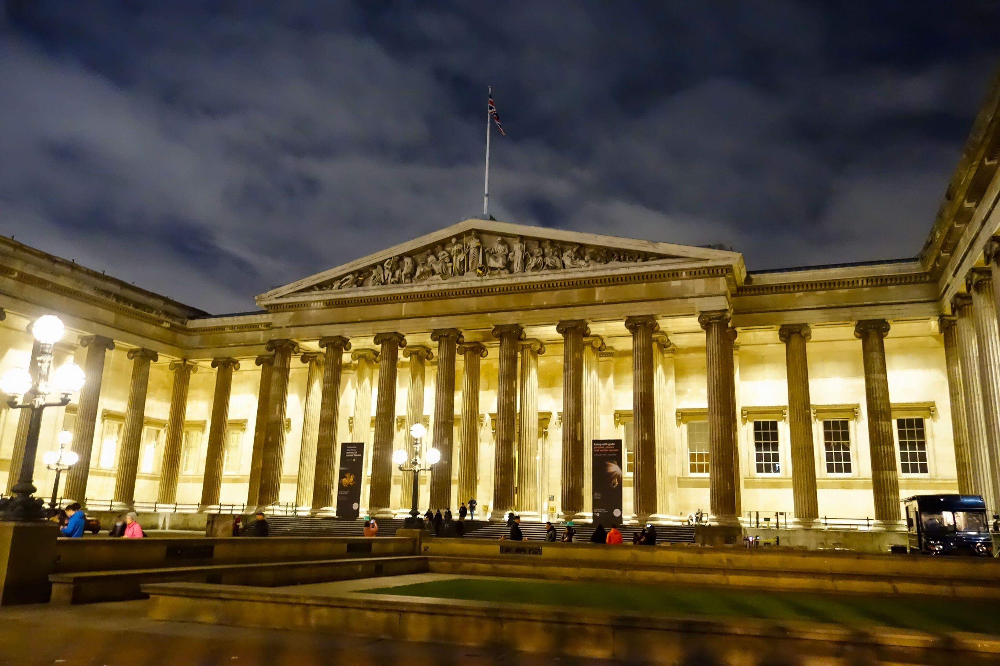
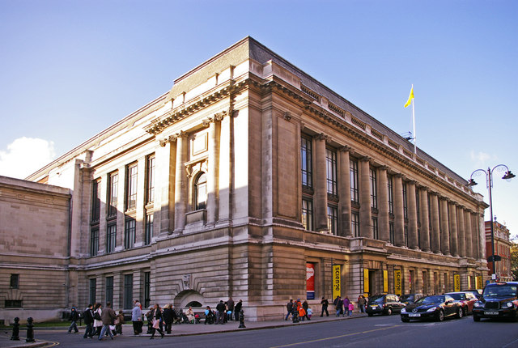
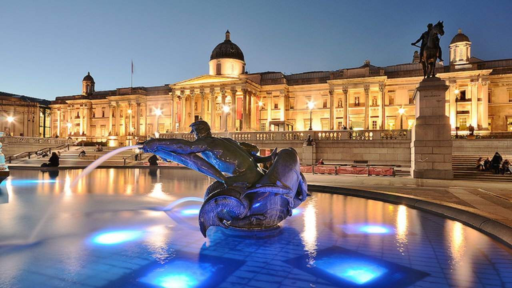
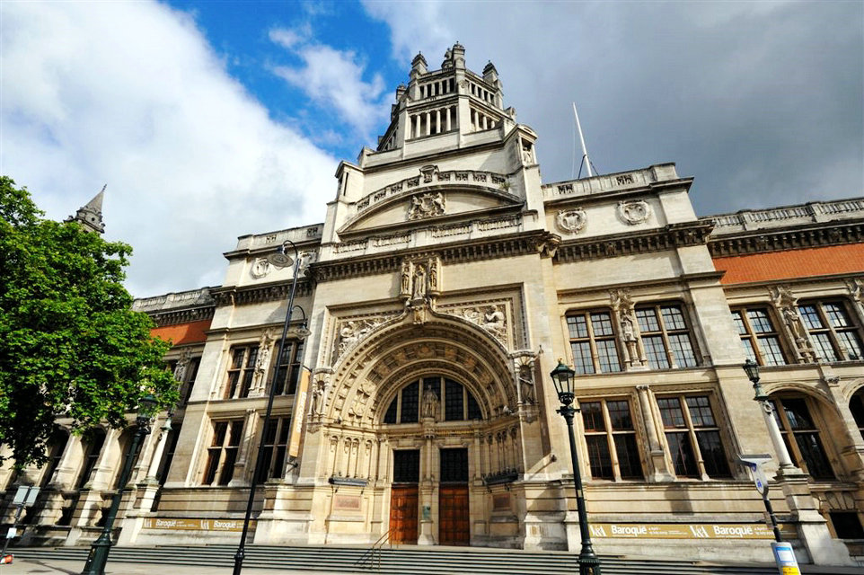
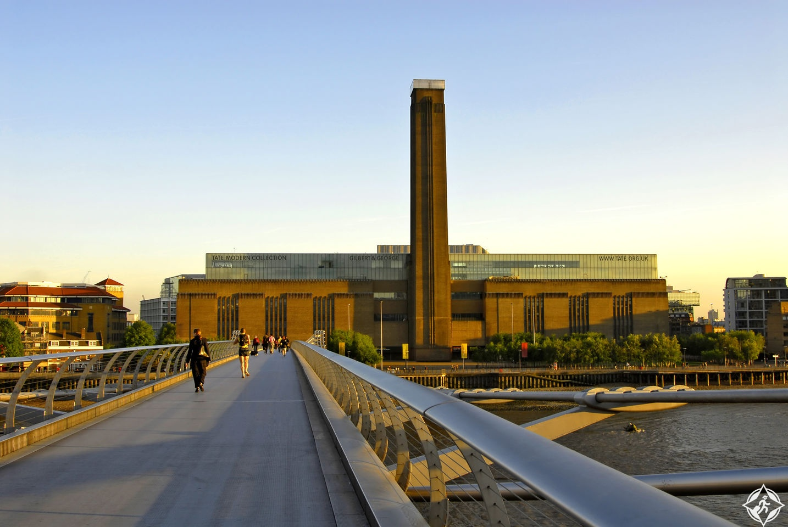
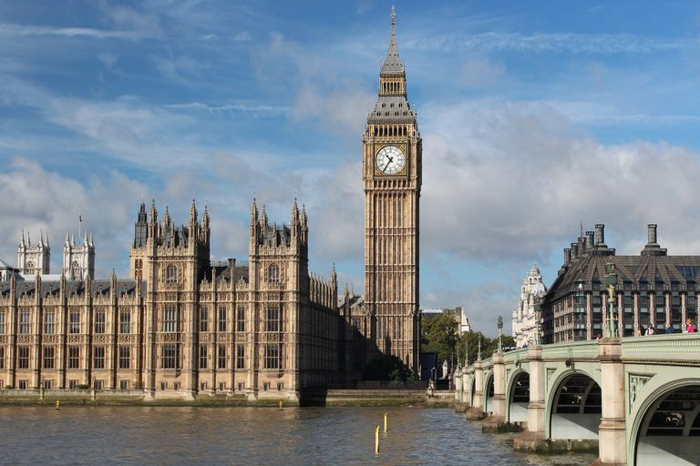
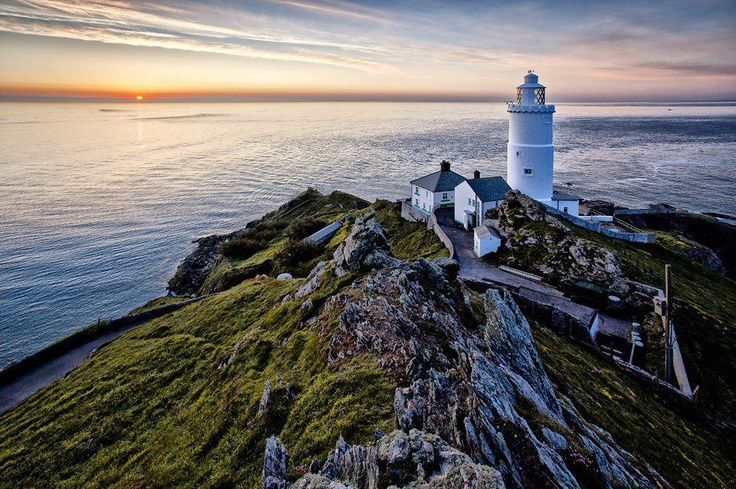
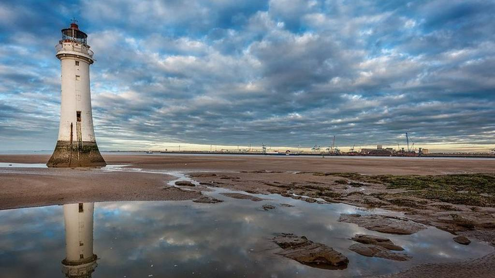
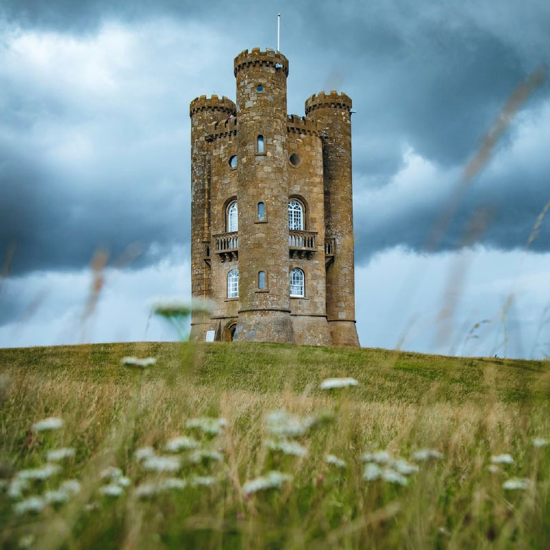
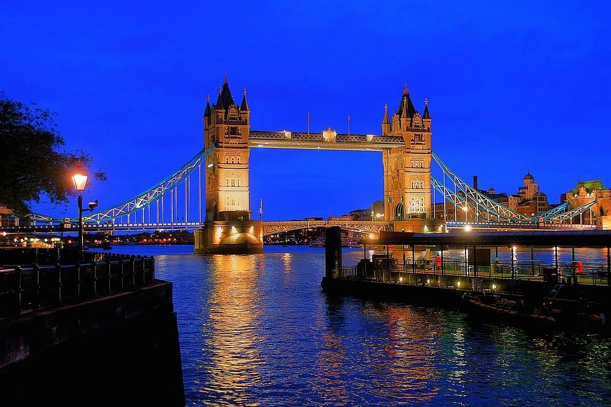

Welcome to England
Tourism in England is still one of the most popular tourist destinations for
Arab travelers, London is the capital of the United Kingdom and its largest
city. You cannot go to England without visiting London and enjoying its
beauty that fascinates all its visitors.
The most important tourist attractions in England
- The most famous museums
- The most famous Towers
- The most famuos Castels
the british museums

The British Museum in Bloomsbury, London, United Kingdom, is a museum and public institution dedicated to human history, art and culture The museum's permanent collection of about eight million works of art is among the largest and most comprehensive in the world, most of which were acquired during the era of the British Empire.
Founded: 1753
Architectural style: Greek Revival
Director: Hartwig Fischer
Architects: Robert Smirke, John Russell Pope, Spencer de Grey, Sidney Smirke, John James Burnet, more
Architectural design firms: Foster & Partners, Buro Happold, Rogers Stirk Harbor + Partners
science museums

The Science Museum is one of the three main museums on Exhibition Road, South Kingston, London and is part of the National Gallery of Science and industry
The museum is also one of London's top tourist attractions. Like many other publicly funded national museums in the UK, the Science Museum does not charge an entrance fee. Wikipedia
Founded: 1857
Director: Jan Blatchford
Custom Purpose: Museum
Architect: Richard Allison
Parent Institution: Science Museum Collection
Subsidiary: Science Shops Ltd
national Gallery

The National Gallery of London was founded in 1824 and houses a rich
collection of paintings dating from 2300 to the mid-13th century to 1900[a] initially on Trafalgar Square. The exhibition is an exempt charitable organization, and among the public interests is a body other than the Ministry of Culture, Information and Sports. Wikipedia
Director: Gabriel Vinaldi
Founding Person: United Kingdom Government
Founded: 1824
Location: Trafalgar Square
Architects: Robert Venturi, Denise Scott Brown, William Wilkins
victoria museum

The Victoria and Albert Museum is the largest museum of decorative arts in the world
with a collection of 4.5 million different objects
The museum was founded in 1852 in the British capital, London, and is named after Queen
Victoria and her husband, Prince Albert. The museum is located on Exhibition Street in Kensington and Chelsea. Wikipedia
Founder: Henry Cole Founded: 1856
Name relative to: Victoria, Queen of the United Kingdom, and Albert, Prince-Husband
Subsidiaries: Young V&A, V&A Enterprises Limited
Tate modern museum

A museum dedicated to the arts, formerly known as the National Gallery
British Art and then Tate Britain in 2000, it displays works by majorinternational artists,
and the design of the museum itself is a unique version of engineering beauty
london tower

Her Majesty's Palace and Castle, popularly known as the Tower of London
historic castle on the north bank of the River Thames in the heart of London in England
The Tower of London was built in late 1066, as part of the Norman conquest of England
In 1078, William the Conqueror commissioned the construction of the White Tower
which became a symbol of the new dynasty's conquest of their enemies in London.
Godreiffe Lighthouse

Godreiffe Lighthouse was built in 1858-1859 on Godreife Island in St Elvis's Bay
Cornwall It is located approximately 300 meters from Cape Godrevi,
and is surrounded by coral reefs, which have always been dangerous for shipping traffic for centuries.
Leasowe Lighthouse

Leasowe Lighthouse is a historic lighthouse in Leasowe on the Wirral Peninsula in Merseyside, England.
The lighthouse was built in 1763 by Mersey Docks and Harbor Company to safely route shipping to the Port of Liverpool
and is the oldest brick lighthouse in the United Kingdom. The lighthouse became old and closed in 1908. Wikipedia (English)
Broadway Tower

Broadway Tower is a folly building located on Broadway hill, in the English county of Westershire,[1] one mile (1.6 km) southeast of the village of Broadway,
in Britain, at the second highest point in the Cotswolds over 1,024 feet (312 meters) above sea level. The tower itself is 56 feet (20 meters) high.
On a good day you can see thirteen counties in Britain from the top of the tower. Today it is a tourist area open to the public for a small fee.
tower bridge

The tower bridge is a suspended bridge and moved in London in Britain
linking the taste of the Times near the London Tower, which is attributed to
the bridge. The bridge is one of the landmarks of London and one of the
highest bridges Where. It is building a listed first
for more castle